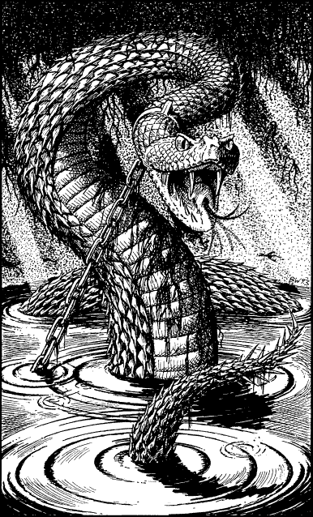

128
The damp subterranean tunnel meanders for nearly a mile before entering a cavern which is lit by rays of insipid sunlight, permeating through holes in its root-entangled ceiling. Your natural Pathsmanship warns you that the slimy water is deep at the centre of this cavern and, as you enter, you take extra care where you tread.
Thirty yards opposite there is a sloping tunnel which appears to ascend towards the surface; dim light illuminates its dry earthen floor. You approach it, keeping near to the cavern wall to avoid the deep water, but you have only taken a few paces when a sudden noise jars your nerves. With a dull boom, a concealed portcullis falls from the ceiling to seal off the tunnel through which you have come. Moments later, swirling eddies form in the water at the centre of the cavern and, with a hissing splash, a huge snaky head breaks through the surface and rises up to scrape the ceiling. Around its banded neck there is a collar of iron which is attached to a heavy chain. The chain disappears below the surface, keeping the creature a prisoner of this cavern. You gasp as you look into the eyes of this gigantic serpent for they radiate waves of evil that seem to place a chill in your very soul.

If you possess the Discipline of Animal Mastery and have attained the rank of Kai Grand Crown, turn to 61.
If you possess Animal Mastery but have yet to attain this rank, turn to 208.
If you do not possess Animal Mastery, turn to 110.